Music · Broadway · Jazz Standards · Song Form · Grades 6–12
George Gershwin
How does a theater song become a jazz standard? Explore George Gershwin’s melodies, his collaboration with lyricist Ira Gershwin, and the rhythms that connect Broadway, jazz, and the concert hall.
Start with a rhythm experiment, choose a complete score, then connect the music to its history. No instrument required; advanced students can play from the linked editions.
A melody can travel
A jazz standard is a tune that many musicians return to and reinterpret. The composition supplies material; a performance adds choices about tempo, phrasing, accompaniment, and improvisation. George and Ira’s songs often begin with a theatrical verse before the familiar refrain. Find both in the original score rather than assuming the opening is the tune you know.
Predict: Will a repeated melody feel the same if its accents change? Clap four steady beats, then clap a short pattern between those beats. Repeat the pattern while your partner keeps the pulse. Test: move one accent onto a beat. Explain: which version creates more rhythmic tension?
Many jazz choruses use AABA: a returning idea, its repeat, a contrasting bridge, and a return. Map the refrain of I Got Rhythm into those sections. The original song’s ending extends the final section; the common 32-bar jazz “rhythm changes” form is a performance convention, not an exact copy of every original bar.
Read and play
Choose a piece from the display above. Play its melody excerpt, slow the tempo, and open the note list to practice reading. Each piece also has its original sheet-music pages, which enlarge for class discussion.
The player uses a classroom melody reduction, not the complete piano or vocal arrangement. Each caption names the passage and any omissions. The original scores are public domain in the United States; rights vary by country.
Fascinating Rhythm · read, listen, and explore
Watch the accents move between the beats while the short melody keeps returning.
Read the complete original sheet music
Click a page to enlarge it. Use the arrow keys to step through this work; Escape closes the viewer. The page player above performs only the identified excerpt.
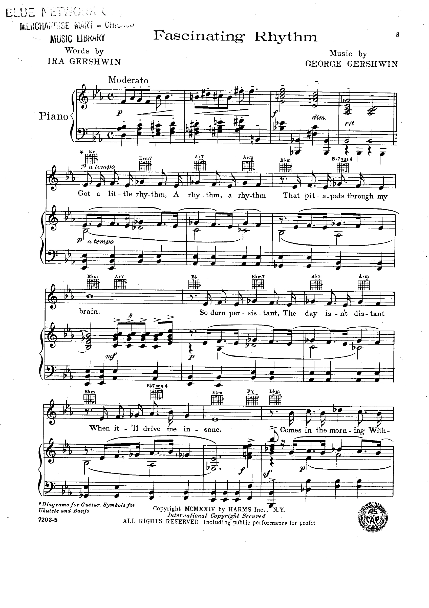
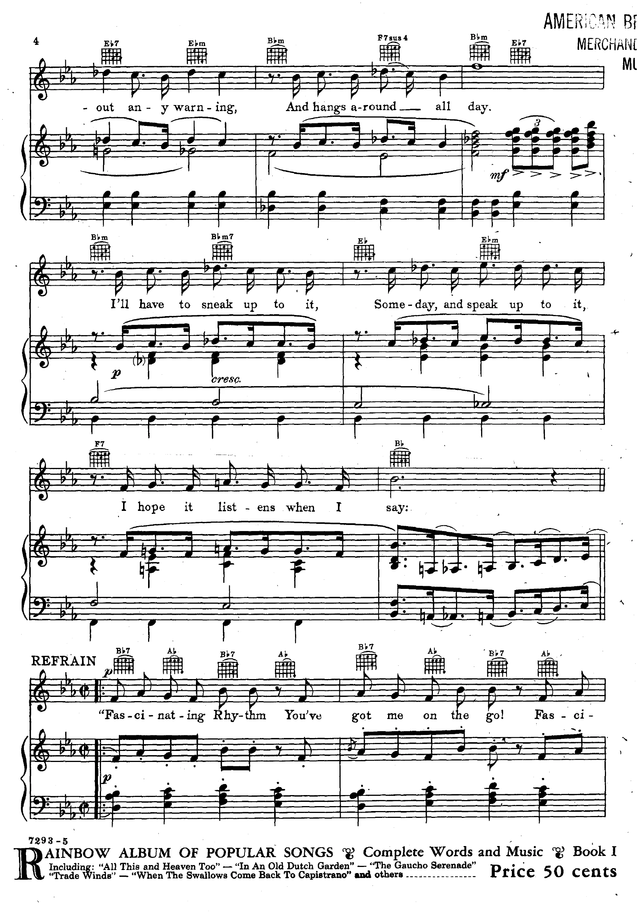
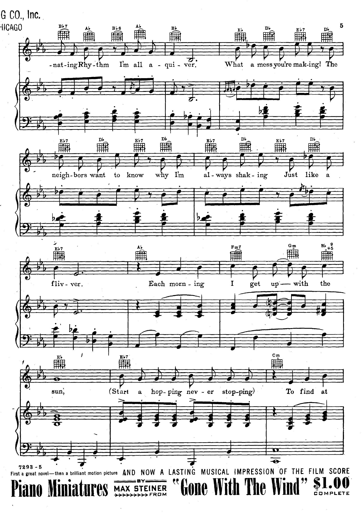
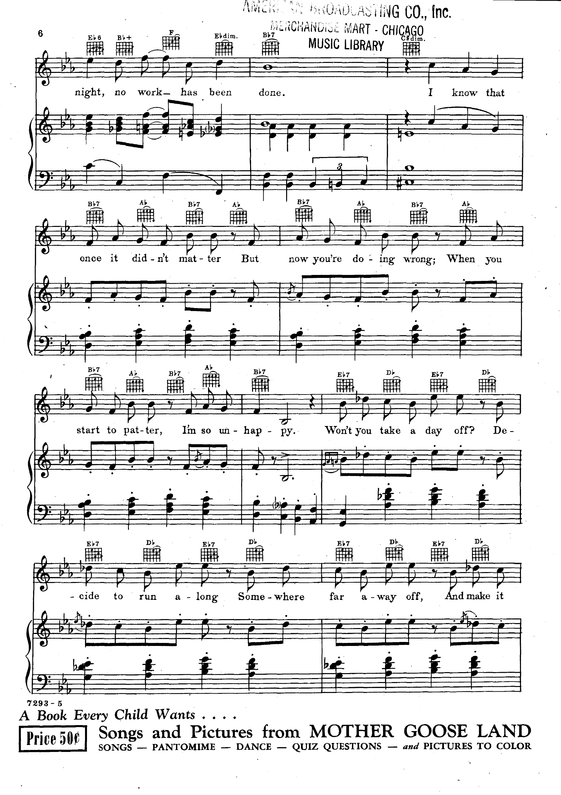
Someone to Watch Over Me · read, listen, and explore
Follow the rising first bar, then hear the longer notes answer it.
Read the complete original sheet music
Click a page to enlarge it. Use the arrow keys to step through this work; Escape closes the viewer. The page player above performs only the identified excerpt.
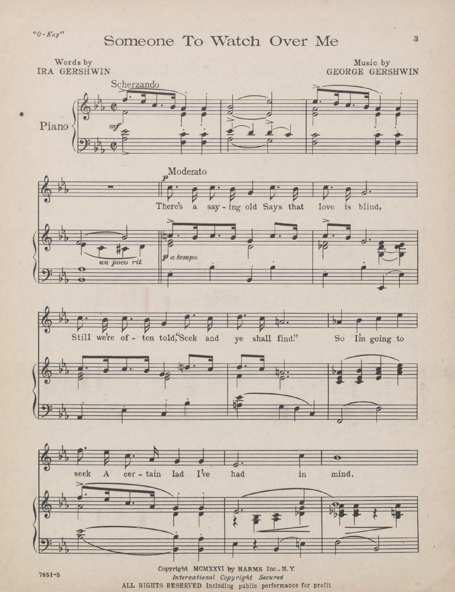
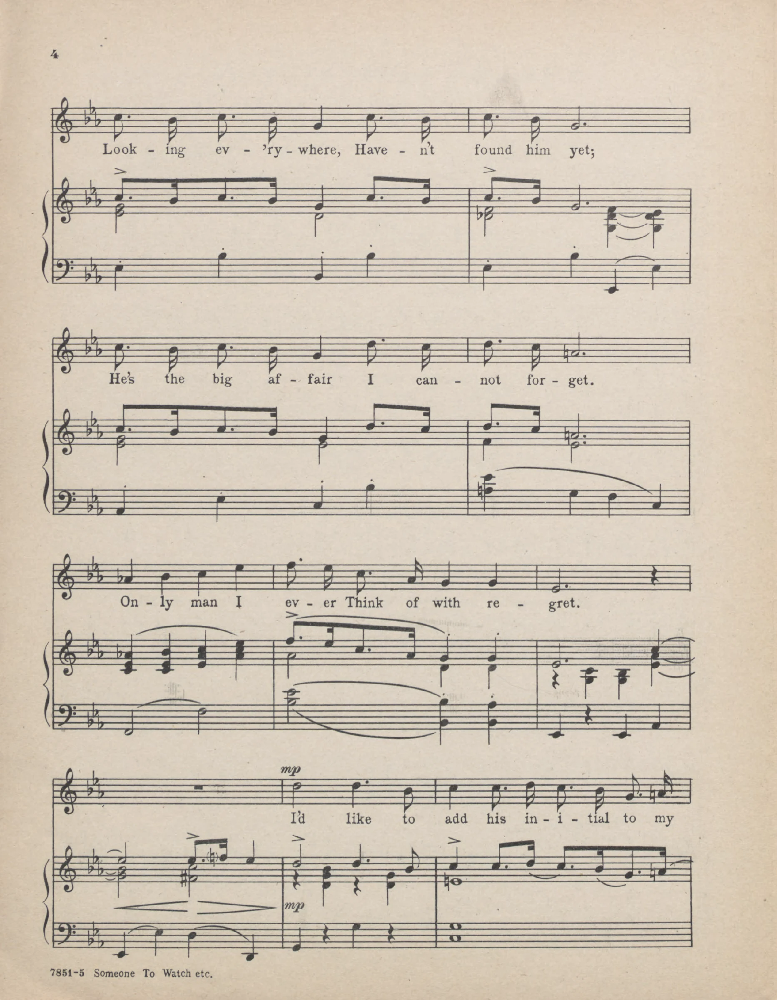
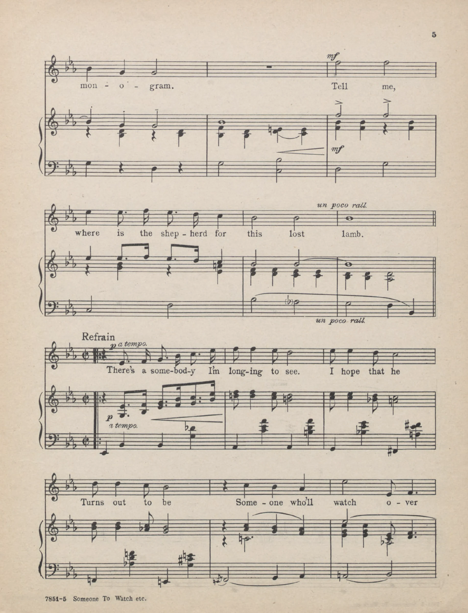
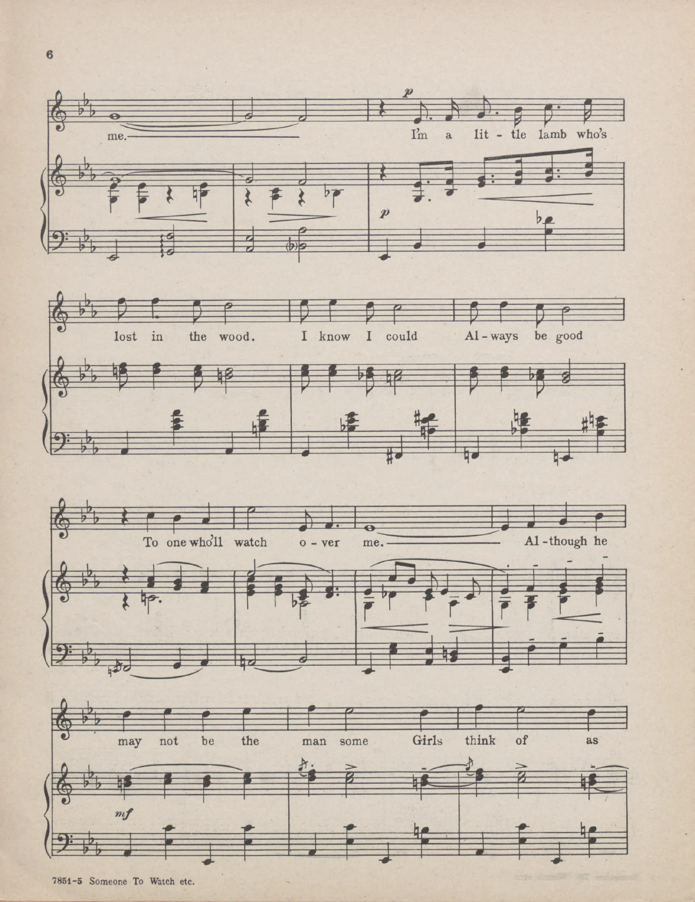
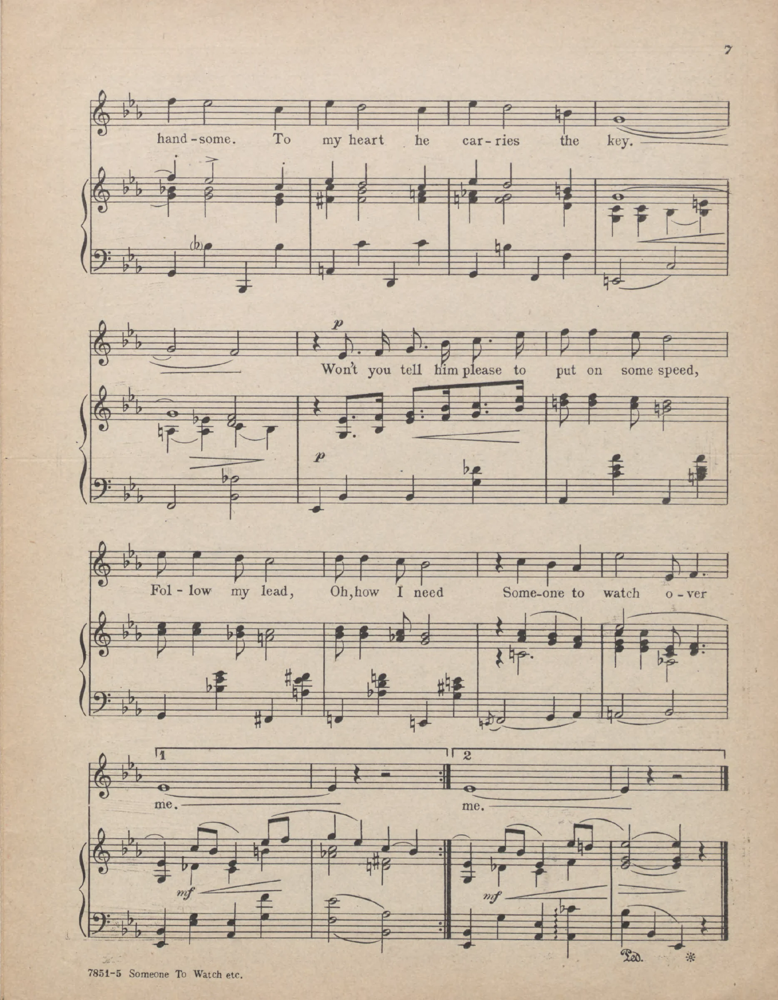
I Got Rhythm · read, listen, and explore
Find the ties that hold a note across a beat, then compare the two four-bar phrases.
Read the complete original sheet music
Click a page to enlarge it. Use the arrow keys to step through this work; Escape closes the viewer. The page player above performs only the identified excerpt.
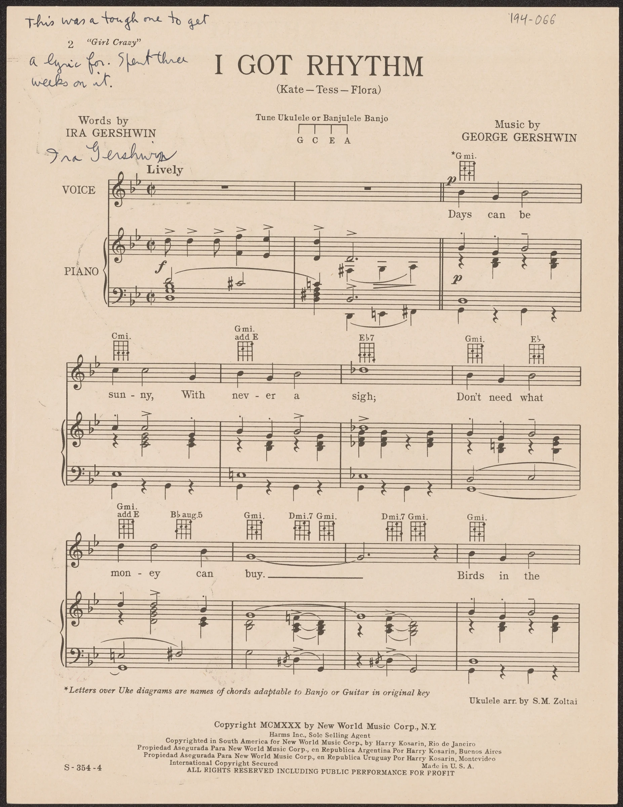
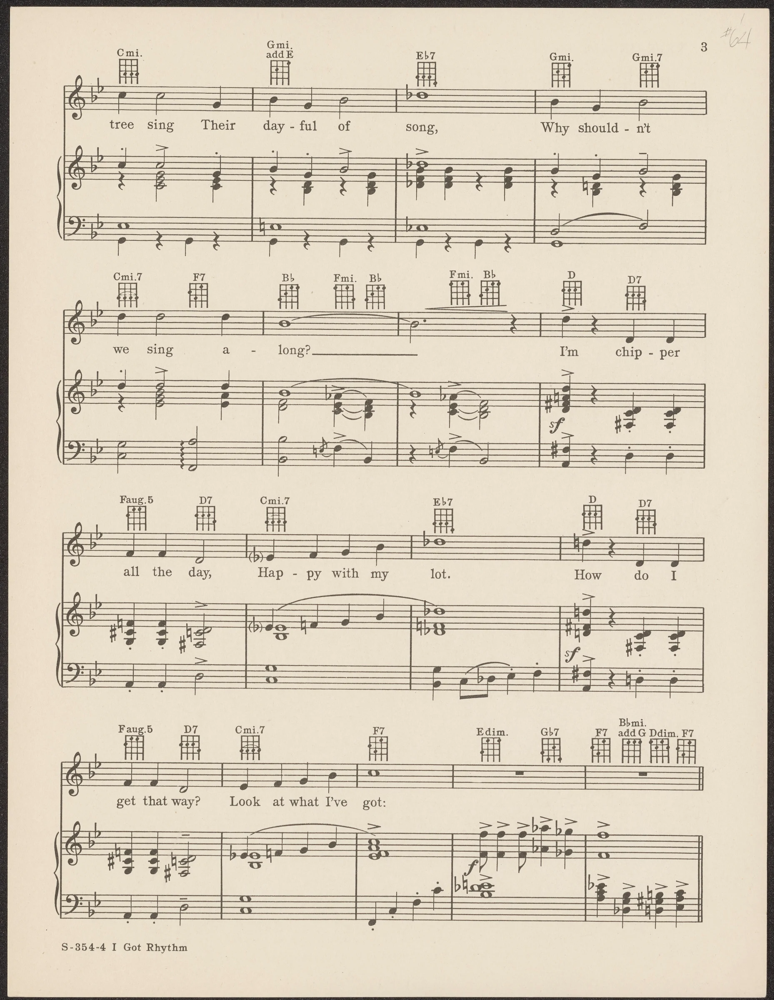
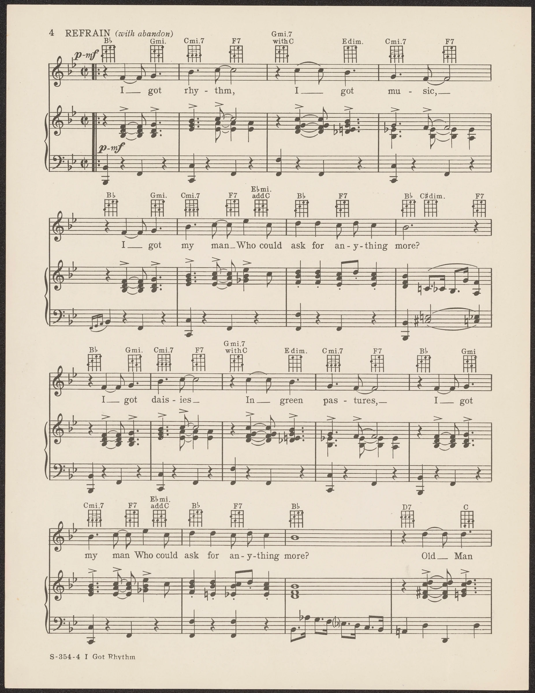
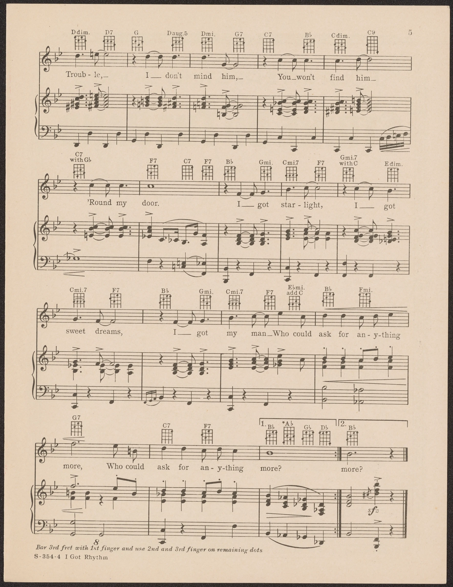
Biography and timeline
Who was George Gershwin?
George Gershwin was born in Brooklyn on September 26, 1898, to Russian-Jewish immigrant parents. As a teenager he worked as a song plugger on New York’s Tin Pan Alley, playing publishers’ songs for prospective customers. That job trained his ear for memorable melodies and the practical business of sheet music.
His 1919 song Swanee, with lyrics by Irving Caesar, became a major hit. George and his older brother Ira then developed a lasting partnership: George composed the music, while Ira shaped the words. Their 1924 musical Lady, Be Good! included Fascinating Rhythm. Their songs became material that jazz performers could reinterpret through phrasing, harmony, and improvisation.
Gershwin also wrote concert music. Rhapsody in Blue premiered in 1924 with Gershwin at the piano; An American in Paris followed in 1928. He drew on Black American musical traditions while working within commercial theater and concert institutions. Studying those influences means recognizing the musicians and communities that developed blues and jazz, as well as Gershwin’s own compositional work.
He later composed Porgy and Bess (1935), with a libretto by DuBose Heyward and lyrics by Heyward and Ira. Gershwin died on July 11, 1937, aged 38. The opera and its song Summertime are outside this lesson’s public-domain score selection.
A life in music
- 1898Born in Brooklyn, New York.
- 1910sWorks as a Tin Pan Alley song plugger.
- 1919Swanee, with Irving Caesar, becomes his breakthrough song.
- 1924Lady, Be Good! and Rhapsody in Blue.
- 1926Oh, Kay! includes Someone to Watch Over Me.
- 1930Girl Crazy includes I Got Rhythm.
- 1935Porgy and Bess premieres.
- 1937Dies in Los Angeles, aged 38.
Practice and reflection
- Choose one score. Identify its meter, key signature, and one repeat or contrasting section.
- Perform a short phrase twice: first as written, then with one deliberate rhythmic change. Keep the pulse steady. Explain what changed.
- What stays recognizable when a performer changes a song’s rhythm? Use a specific phrase from one score as evidence.
Who wrote the lyrics to these three songs?
Exit ticket: name one observation you can support with the score and one historical claim you can support with a source.
Continue with Sheet Music Trainer, Fake Book, or Jelly Roll Morton.
Sources and further listening
Use these collection essays to investigate the biography and musical context. Archival recordings illustrate performances; their rights are separate from the scores above.